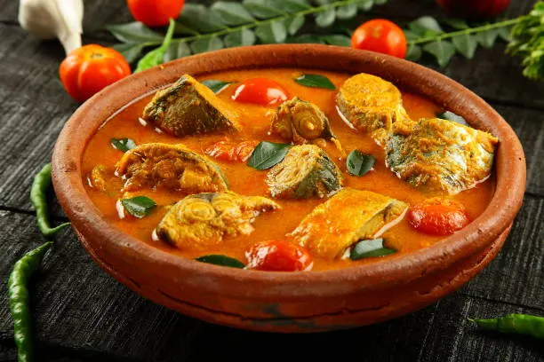
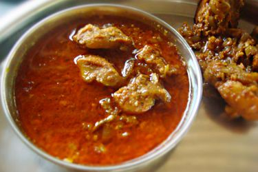
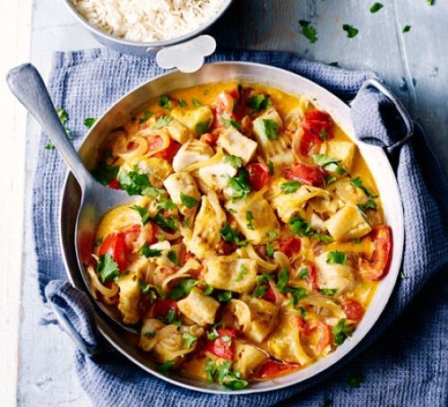
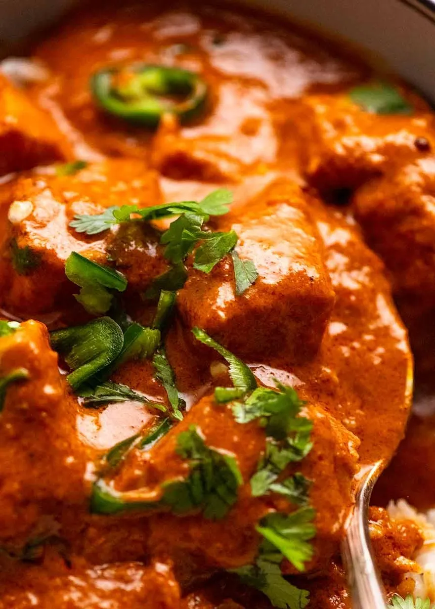
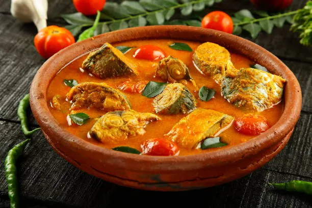
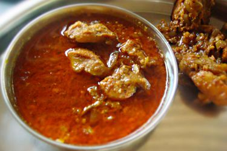
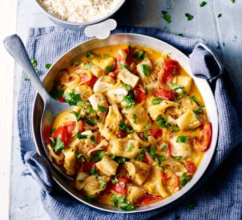
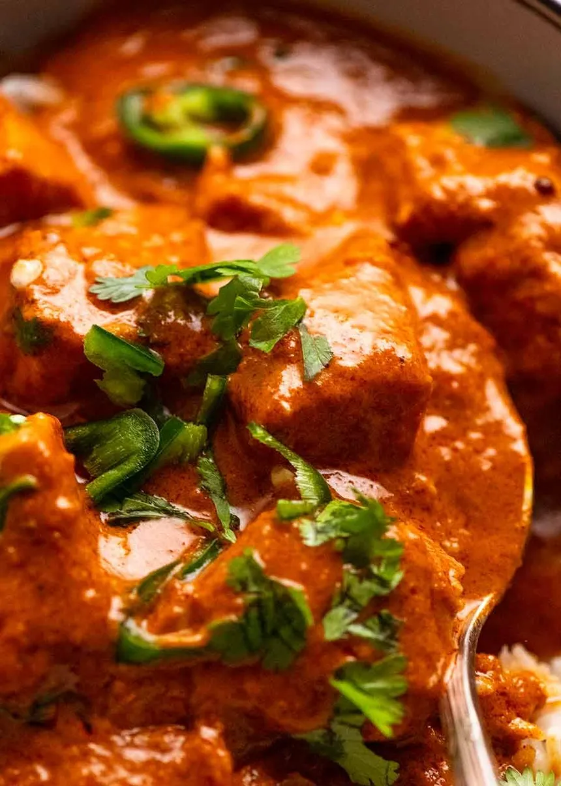

Goan Fish Curry Classic
The soul of Goa in a bowl: aromatic, tangy, and deeply satisfying.
Discover the flavors, stories, and secrets behind this iconic coastal dish.
 







History & Origins
Goa’s cuisine stands out due to centuries of Portuguese, Saraswat, and coastal influences. Xitti Kodi—Goan Fish Curry—is a marriage of local spices, coconut, and the Portuguese introduction of chilies and vinegar. Eaten daily in most Goan homes and feasts, it symbolizes the region’s spirit of blending tradition with zest.
Authentic Goan Fish Curry Recipe
Ingredients
- 500g firm white fish (pomfret, kingfish)
- 1 cup grated coconut
- 2 tbsp coconut oil
- 1 onion, sliced
- 2 green chilies
- 1 tomato, chopped
- 2 tbsp tamarind water or kokum
- 1 tsp turmeric powder
- 2 tsp red chili powder
- Salt, to taste
- Fresh coriander
Steps
- Grind coconut, chilies, turmeric, and chili powder with a little water to make a smooth masala paste.
- Heat coconut oil in a pan, sauté onions until golden, then add tomatoes.
- Add masala paste; fry for 2-3 minutes until aromatic.
- Pour in tamarind water, simmer, then add fish pieces and salt.
- Simmer gently until fish is cooked and flavors meld. Garnish with coriander.
- Serve hot with Goan red rice or pao bread.
💡
Did you know? In Goa, every village has its own twist on fish curry—some use kokum, others love extra chilies!
Regional Variants
- Xitti Kodi — Classic coconut-based red curry, often with pomfret or kingfish. (Traditional Goan Fish Curry With Rice)
- Caldeirada — A Catholic version, creamier and often with mixed seafood.
- Hooman — Saraswat-style, sometimes lighter yellow and soured with tamarind or lime.